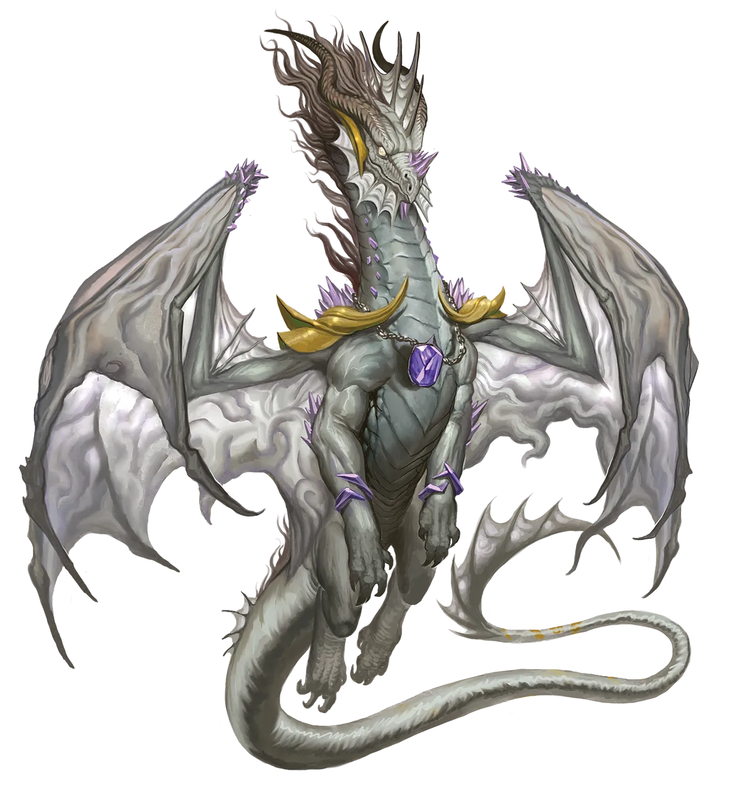
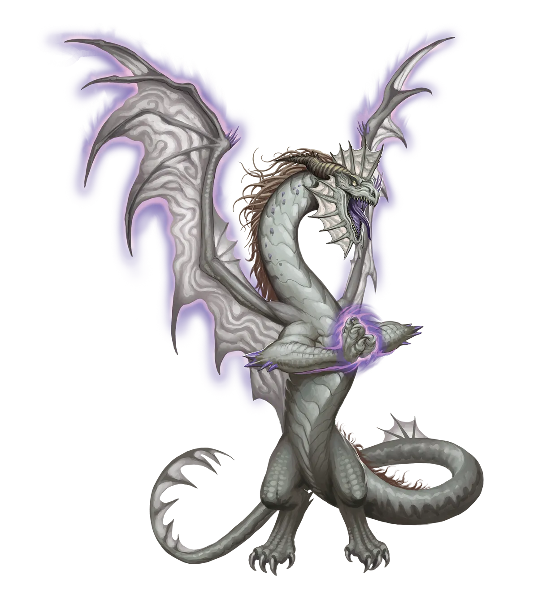

心灵宫殿
星界龙类有时会将思绪、记忆与影像储存在心灵宫殿中，只存在于它们自己的记忆里。尽管我自己的宝藏库也类似，因为我将其保存在知识巨著中，但我仍然觉得这种作法很奇怪。如果一切都在它们的头脑中，它们真的拥有任何东西吗？它们也无法轻易地向人炫耀，就像我在前言前自画像中所展示的那些书一样。那么，在那时，那还真的算是宝藏库吗？星界龙类声称，这使得人们几乎不可能在不使用记忆魔法的情况下从它们那里偷窃，并指出在星界，思想就是现实。
星界龙 Astral Dragon |
|
|
星界龙类尤其注重隐私且骄傲自负，在正常情况下，它们过着独居的生活，翱翔于星界的无尽虚空，在银之海的诸神碎片与奇异的思维形态之间狩猎。这种性情组合使得它们成为秘奥龙类中最不可能执行光耀永恒仪式的存在。尽管如此，有时某种异常现象或其他奇异事件会如此强烈地呼唤星界龙类去执行该仪式，以至于连高傲寡言的龙类也无法抗拒；或者，某种绝症（最可能源于心智）会迫使星界龙类的爪子执行这一仪式。也许它们在旅途中遭遇了一个心灵印记，引导它们走向一个无法摆脱的更深层奥秘；又或者它们发现了一段似乎指向惊人宝藏的记忆，却缺乏追寻它的能力。更离奇的传说甚至提及，有些光耀星界龙类并非由正统星界龙类执行光耀永恒仪式所诞生，而是不知何故，由被称为龙类幻魂的无实体星界龙类回响成功执行光耀永恒仪式而诞生。据传说所述，这些前幻魂可能最初记得自己的血脉来自任何传承――或者毫无传承――而尽管它们转化后看起来与其他光耀星界龙类毫无二致，但它们极易因态度的巨大差异而暴露身份。无论情况如何，传统主义的星界龙类都鄙视光耀星界龙类，视其为对自己的利益过于急躁和粗鲁。而光耀星界龙类则视传统主义星界龙类为无可救药的僵化、固步自封，无法看到潜力。即便如此，当起初就没有多少星界龙类成为光耀龙类时，这种观点也几乎无法带来慰藉。 由于所有这些及更多原因，光耀星界龙类离开星界，前往其他位面，尤其是物质位面，那里充满了冒险与冒险者。与星界上那些爱评判的同族不同，大多数物质位面的居民仅是对光耀星界龙类心存敬畏，这尤其迎合了龙类的骄傲。光耀星界龙类可能像大多数星界龙类一样异常高傲，但在那份骄傲之下往往隐藏着深度的不安全感。因此，如果你有一点耐心，并能保持支持与赞美，与光耀星界龙类结交并不困难。只是不要进行无耻的奉承，因为星界龙类通常能一眼识破。花时间与精力这样做的冒险者会发现，他们结交了一位终生的忠诚挚友，尽管也许是一位极其傲慢和内向的朋友。光耀星界龙类常常成为在其工作中使用星界精华的施法者，例如吟游诗人、术士和法师。 心灵宫殿 星界龙类有时会将思绪、记忆与影像储存在心灵宫殿中，只存在于它们自己的记忆里。尽管我自己的宝藏库也类似，因为我将其保存在知识巨著中，但我仍然觉得这种作法很奇怪。如果一切都在它们的头脑中，它们真的拥有任何东西吗？它们也无法轻易地向人炫耀，就像我在前言前自画像中所展示的那些书一样。那么，在那时，那还真的算是宝藏库吗？星界龙类声称，这使得人们几乎不可能在不使用记忆魔法的情况下从它们那里偷窃，并指出在星界，思想就是现实。 星界龙特质 Astral Dragon Traits 你出身于一脉来自星界位面的高傲心灵巨龙世系，即为星界龙。 |
  |